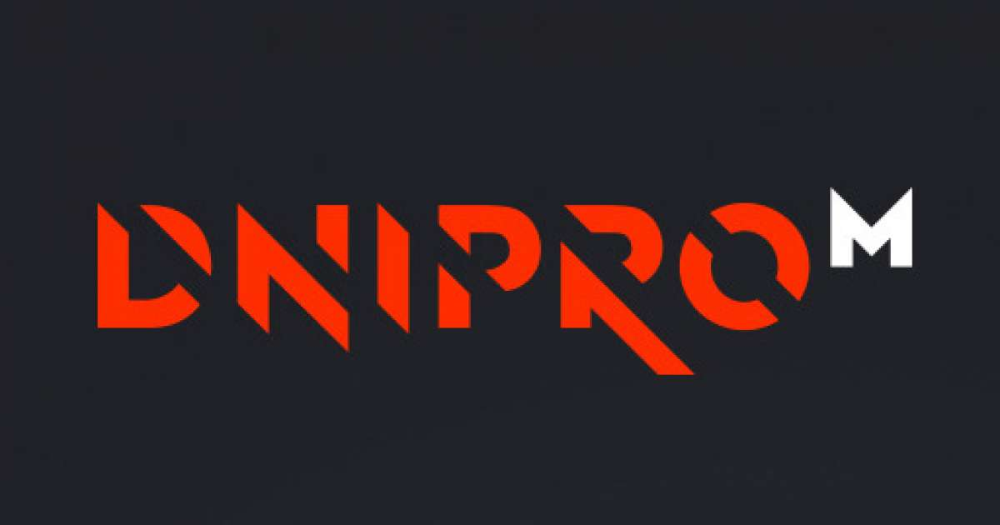
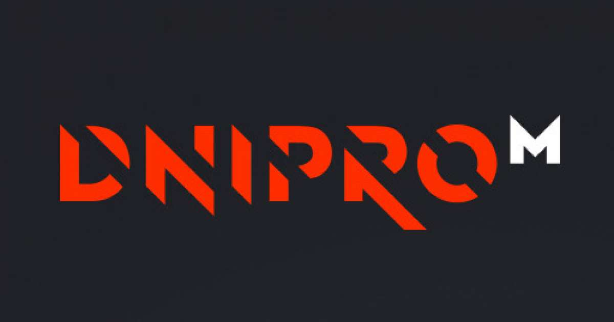

У Ахмеда
Запрошуємо вас на віртуальну подорож до атмосферної шашличної, де запах смаженого м'яса завжди наповнює повітря найкращими сподіваннями. Шашлик - це не просто страва, це справжнє мистецтво приготування, де м'ясо маринується у соковитих приправах та потім смажиться на вогнищі до золотистої скоринки. Ви можете вибрати різні види м'яса, від ніжної курки до ароматного баранячого шашлику. Шашлична - це місце, де друзі та родина збираються разом, щоб насолоджуватися смаком і відпочивати в теплій атмосфері. Закінчується вечір зі сміхом, гарним настроєм та ситними смаками шашлику, які залишаються в пам'яті на довгий час.
Партнери
Monobank: Monobank - це інноваційний банк, який завжди готовий допомогти своїм клієнтам з фінансовими питаннями. Наша співпраця з Monobank дозволяє нам надавати нашим клієнтам спеціальні пропозиції та знижки при оплаті через цей банк. Ми цінуємо їхню підтримку та зручність, яку вони надають нашим клієнтам.
Metro: Metro - це світовий лідер у сфері гуртової торгівлі продуктами та обладнанням для ресторанів та кафе. Наша співпраця з Metro дозволяє нам завжди мати доступ до найсвіжіших і найкращих продуктів для наших шашликів та інших страв. Ми обираємо Metro для якості та надійності їхнього асортименту.
DniproM: DniproM - це логістична компанія, яка забезпечує нам швидку та надійну доставку наших продуктів і обладнання. Ми довіряємо їхнім послугам, оскільки вони завжди дотримуються графіків та гарантують, що наші інгредієнти завжди будуть вчасно на місці.
 

Шашлична - це чудове місце для насолоди ароматними шашликами та теплою атмосферою. У нас ви знайдете різноманітні види смачного м'яса, які маринуються у соковитих приправах та смажаться на вогнищі. Гарячі шашлики, свіжий лаваш і смачні гарніри - все це чекає на вас в нашій шашличні. Запрошуємо вас на смачну подорож в світ шашликів!